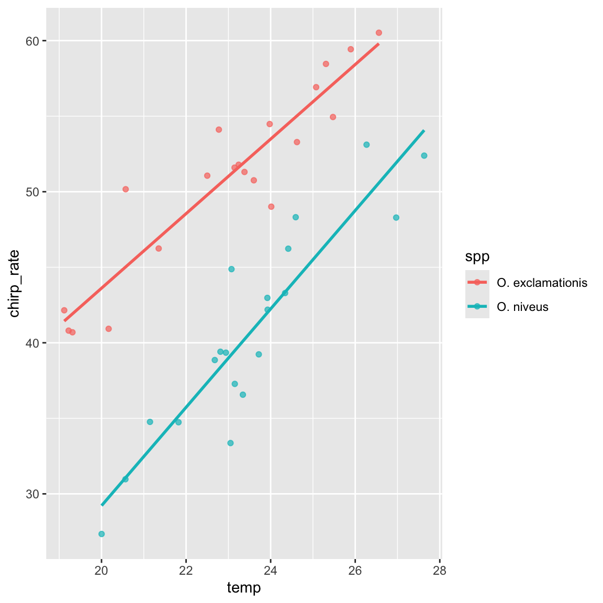
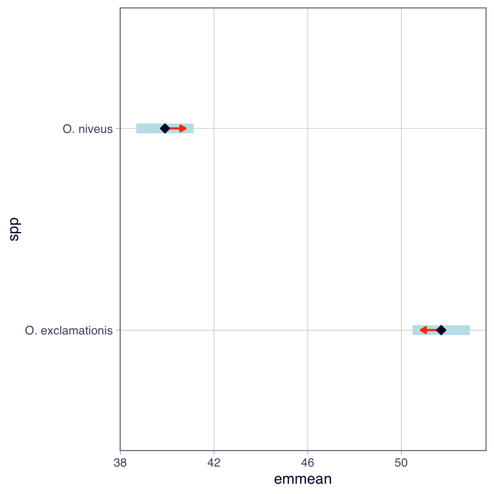
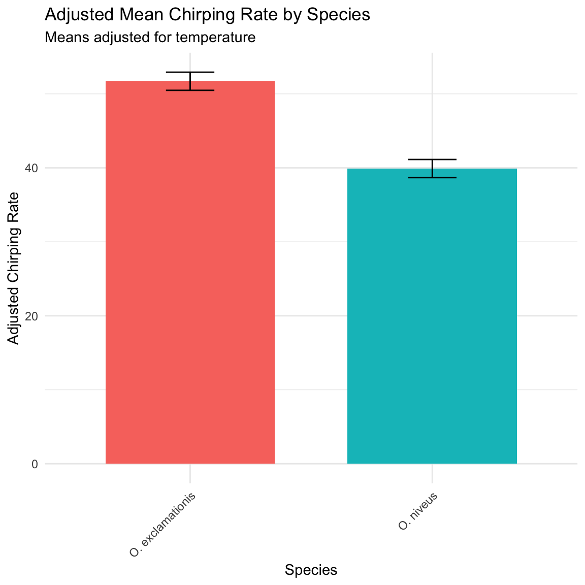
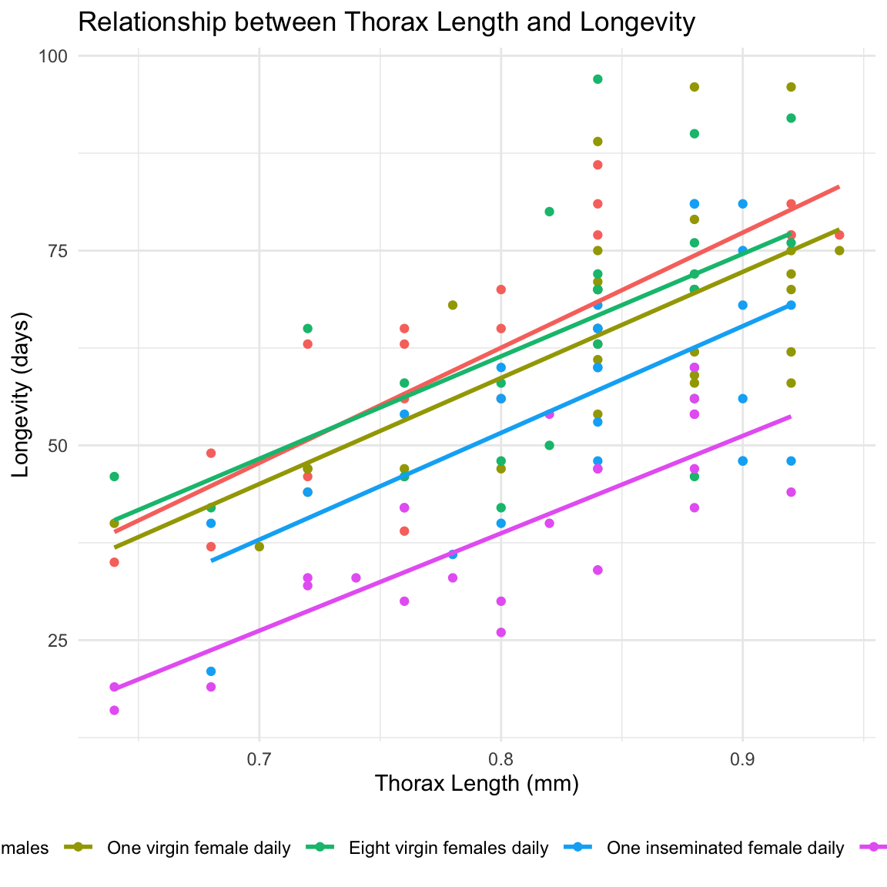
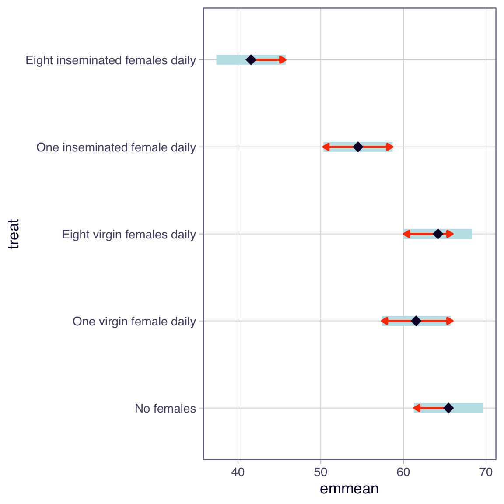
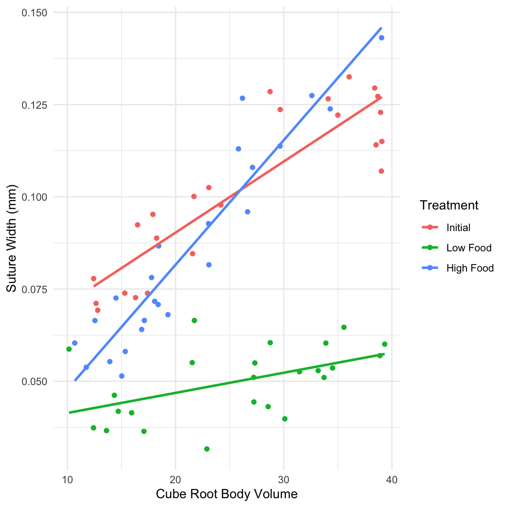

spp temp chirp_rate
1 O. exclamationis 19.31296 40.69557
2 O. exclamationis 23.24355 51.78799
3 O. exclamationis 23.60175 50.75553
4 O. exclamationis 19.22222 40.80589
5 O. exclamationis 20.57129 50.16484
6 O. exclamationis 21.35188 46.24225ANCOVA
Covariates
Bill Perry
Lecture 15: Analysis of Covariance (ANCOVA)
What is ANCOVA?
- ANCOVA (Analysis of Covariance) combines regression and ANOVA to:
- Compare group means while adjusting for a continuous covariate
- Increase statistical power by reducing residual error
- Control for confounding variables
When to Use ANCOVA
- Use ANCOVA when you have:
- Response variable: Continuous
- Predictor variable: Categorical (factor/groups)
- Covariate: Continuous variable that affects the response
Key Assumptions of ANCOVA
- Independence of observations
- Normality of residuals
- Homogeneity of variances across groups
- Linearity between response and covariate within each group
- Homogeneity of slopes (most critical!) - regression slopes must be not significantly different across all groups
Critical First Step
Always test for homogeneity of slopes before proceeding with ANCOVA. If slopes differ significantly between groups, standard ANCOVA is inappropriate.
Part 1: Cricket Chirping Analysis
Data Overview
We want to compare chirping rate of two cricket species: - Oecanthus exclamationis - Oecanthus niveus
But we measured rates at different temperatures, and there’s a relationship between pulse rate and temperature. ANCOVA lets us adjust for temperature effect to get a more powerful test!

Step 1: Test Homogeneity of Slopes
This is the most critical assumption! We test if the regression slopes are equal across all groups.
Anova Table (Type III tests)
Response: chirp_rate
Sum Sq Df F value Pr(>F)
(Intercept) 133.06 1 19.7625 0.00008062 ***
temp 1372.62 1 203.8707 < 0.00000000000000022 ***
spp 69.76 1 10.3617 0.002724 **
temp:spp 26.08 1 3.8734 0.056796 .
Residuals 242.38 36
---
Signif. codes: 0 '***' 0.001 '**' 0.01 '*' 0.05 '.' 0.1 ' ' 1Interpretation: - p > 0.05, slopes homogeneous - proceed with ANCOVA - p < 0.05, slopes differ and standard ANCOVA is inappropriate
The contrasts setting changes the specific hypothesis being tested for your main effects.
- contr.treatment the test for temp is testing the effect of temperature only for the reference species (O. exclamationis)
- one level of factor is the “reference” level (“O. exclamationis” comes first alphabetically).
- is mean chirp_rate equal to zero for the reference species (“O. exclamationis”) when temp is 0?
With contr.sum, test for temp is testing the average effect of temperature across both species.
- “sum coding” or “deviation coding.”
- compares each factor level to the grand mean
- is average mean chirp_rate (averaged across both species) equal to zero when temp is 0?
Intercept is hard to interpret in both models because temp = 0 is meaningless - center temp variable (e.g., temp_c = temp - mean(temp)) - run model - intercept would then test the chirp_rate at the average temperature - much more interpretable
Step 2: Fit ANCOVA Model
Since slopes are homogeneous (p > 0.05), fit ANCOVA model without interaction term
Call:
lm(formula = chirp_rate ~ temp + spp, data = c_df)
Residuals:
Min 1Q Median 3Q Max
-6.0065 -1.9653 0.1923 0.7886 5.9192
Coefficients:
Estimate Std. Error t value Pr(>|t|)
(Intercept) -19.1014 4.7795 -3.997 0.000295 ***
temp 2.7926 0.2048 13.634 0.000000000000000530 ***
spp1 5.9003 0.4296 13.733 0.000000000000000424 ***
---
Signif. codes: 0 '***' 0.001 '**' 0.01 '*' 0.05 '.' 0.1 ' ' 1
Residual standard error: 2.694 on 37 degrees of freedom
Multiple R-squared: 0.8994, Adjusted R-squared: 0.894
F-statistic: 165.4 on 2 and 37 DF, p-value: < 0.00000000000000022- Interpretation
- spp1 is clue that contr.sum is active
- represents coefficient for first species (O. exclamationis) relative to grand mean.
- (Intercept): -19.1014 - average chirp_rate (across both species) when temp is 0
- temp: 2.7926 - common slope- for every 1-degree increase in temp- chirp_rate increases by 2.7926 units
- spp1: 5.9003- spp1 coefficient - deviation from grand mean for first species- O. exclamationis
- effect for O. niveus is assumed to be -5.9003
Anova Table (Type II tests)
Response: chirp_rate
Sum Sq Df F value Pr(>F)
temp 1348.81 1 185.90 0.0000000000000005296 ***
spp 1368.34 1 188.59 0.0000000000000004236 ***
Residuals 268.46 37
---
Signif. codes: 0 '***' 0.001 '**' 0.01 '*' 0.05 '.' 0.1 ' ' 1Both Type II (technically more appropriate) and Type III end up doing the exact same calculation:
- test for temp gets the Sum of Squares for temp after accounting for spp.
- test for spp gets the Sum of Squares for spp after accounting for temp.
Step 3: Check Model Assumptions

Shapiro-Wilk normality test
data: ancova_model$residuals
W = 0.96208, p-value = 0.1971Levene's Test for Homogeneity of Variance (center = median)
Df F value Pr(>F)
group 1 0.3897 0.5362
38 Breusch-Pagan (BP) Test for homoscedasticity
studentized Breusch-Pagan test
data: ancova_model
BP = 1.0098, df = 2, p-value = 0.6036Step 4: Calculate Adjusted Means
ANCOVA compares adjusted means - what each group’s mean would be at the overall mean of the covariate.
spp emmean SE df lower.CL upper.CL
O. exclamationis 51.70513 0.6049702 37 50.47934 52.93091
O. niveus 39.90462 0.6049702 37 38.67883 41.13040
Confidence level used: 0.95 Step 5: Pairwise Comparisons
contrast estimate SE df t.ratio p.value
O. exclamationis - O. niveus 11.8 0.859 37 13.733 <0.0001Step 6: Visualize Results


Part 2: Partridge Longevity Analysis
Data Overview
We’ll analyze the effect of mating strategy on male fruitfly longevity, using thorax length as a covariate.
partners type treat longev llongev thorax resid1 predict1
1 8 0 No females 35 1.544068 0.64 -5.868456 40.86846
2 8 0 No females 37 1.568202 0.68 -9.301196 46.30120
3 8 0 No females 49 1.690196 0.68 2.698804 46.30120
4 8 0 No females 46 1.662758 0.72 -5.733936 51.73394
5 8 0 No females 63 1.799341 0.72 11.266064 51.73394
6 8 0 No females 39 1.591065 0.76 -18.166676 57.16668
resid2 predict2
1 -0.04743024 1.591498
2 -0.07105067 1.639252
3 0.05094369 1.639252
4 -0.02424867 1.687007
5 0.11233405 1.687007
6 -0.14369601 1.734761
Step 1: Test Homogeneity of Slopes
Anova Table (Type III tests)
Response: longev
Sum Sq Df F value Pr(>F)
(Intercept) 2963.8 1 26.0142 0.000001349 ***
thorax 12805.8 1 112.3988 < 0.00000000000000022 ***
treat 36.9 4 0.0810 0.9881
thorax:treat 42.5 4 0.0933 0.9844
Residuals 13102.1 115
---
Signif. codes: 0 '***' 0.001 '**' 0.01 '*' 0.05 '.' 0.1 ' ' 1Step 2: Fit ANCOVA Model
Call:
lm(formula = longev ~ thorax + treat, data = p_df)
Residuals:
Min 1Q Median 3Q Max
-26.189 -6.599 -0.989 6.408 30.244
Coefficients:
Estimate Std. Error t value Pr(>|t|)
(Intercept) -54.062 10.255 -5.272 0.000000612 ***
thorax 135.819 12.439 10.919 < 0.0000000000000002 ***
treat1 8.006 1.890 4.237 0.000044991 ***
treat2 4.077 1.889 2.158 0.032935 *
treat3 6.730 1.881 3.578 0.000502 ***
treat4 -2.940 1.891 -1.554 0.122749
---
Signif. codes: 0 '***' 0.001 '**' 0.01 '*' 0.05 '.' 0.1 ' ' 1
Residual standard error: 10.51 on 119 degrees of freedom
Multiple R-squared: 0.6564, Adjusted R-squared: 0.6419
F-statistic: 45.46 on 5 and 119 DF, p-value: < 0.00000000000000022Anova Table (Type II tests)
Response: longev
Sum Sq Df F value Pr(>F)
thorax 13168.9 1 119.219 < 0.00000000000000022 ***
treat 9611.5 4 21.753 0.0000000000001719 ***
Residuals 13144.7 119
---
Signif. codes: 0 '***' 0.001 '**' 0.01 '*' 0.05 '.' 0.1 ' ' 1Step 3: Check Assumptions

Shapiro-Wilk normality test
data: p_ancova_model$residuals
W = 0.99174, p-value = 0.6689Levene's Test for Homogeneity of Variance (center = median)
Df F value Pr(>F)
group 4 0.6535 0.6255
120 Breusch-Pagan (BP) Test for homoscedasticity
studentized Breusch-Pagan test
data: p_ancova_model
BP = 11.763, df = 5, p-value = 0.03818Step 4: Calculate Adjusted Means
treat emmean SE df lower.CL upper.CL
No females 65.4 2.11 119 61.3 69.6
One virgin female daily 61.5 2.11 119 57.3 65.7
Eight virgin females daily 64.2 2.10 119 60.0 68.3
One inseminated female daily 54.5 2.11 119 50.3 58.7
Eight inseminated females daily 41.6 2.12 119 37.4 45.8
Confidence level used: 0.95 Step 5: Pairwise Comparisons
contrast estimate SE
No females - One virgin female daily 3.93 3.00
No females - Eight virgin females daily 1.28 2.98
No females - One inseminated female daily 10.95 3.00
No females - Eight inseminated females daily 23.88 2.97
One virgin female daily - Eight virgin females daily -2.65 2.98
One virgin female daily - One inseminated female daily 7.02 2.97
One virgin female daily - Eight inseminated females daily 19.95 3.01
Eight virgin females daily - One inseminated female daily 9.67 2.98
Eight virgin females daily - Eight inseminated females daily 22.60 2.99
One inseminated female daily - Eight inseminated females daily 12.93 3.01
df t.ratio p.value
119 1.311 0.6849
119 0.428 0.9929
119 3.650 0.0035
119 8.031 <0.0001
119 -0.891 0.8996
119 2.361 0.1336
119 6.636 <0.0001
119 3.249 0.0129
119 7.560 <0.0001
119 4.298 0.0003
P value adjustment: tukey method for comparing a family of 5 estimates 
treat emmean SE df lower.CL upper.CL .group
Eight inseminated females daily 41.6 2.12 119 37.4 45.8 1
One inseminated female daily 54.5 2.11 119 50.3 58.7 2
One virgin female daily 61.5 2.11 119 57.3 65.7 23
Eight virgin females daily 64.2 2.10 119 60.0 68.3 3
No females 65.4 2.11 119 61.3 69.6 3
Confidence level used: 0.95
P value adjustment: tukey method for comparing a family of 5 estimates
significance level used: alpha = 0.05
NOTE: If two or more means share the same grouping symbol,
then we cannot show them to be different.
But we also did not show them to be the same. Part 3: Example with Heterogeneous Slopes
Example where slopes are NOT homogeneous using sea urchin data.

Test for Homogeneity of Slopes
Anova Table (Type III tests)
Response: suture_width
Sum Sq Df F value Pr(>F)
(Intercept) 0.0093295 1 104.97 0.000000000000002828 ***
volume 0.0197876 1 222.63 < 0.00000000000000022 ***
treatment 0.0020070 2 11.29 0.000060644383975751 ***
volume:treatment 0.0062129 2 34.95 0.000000000044525318 ***
Residuals 0.0058662 66
---
Signif. codes: 0 '***' 0.001 '**' 0.01 '*' 0.05 '.' 0.1 ' ' 1Result: With p < 0.05 - heterogeneous slopes! - Standard ANCOVA inappropriate here
What to do with Heterogeneous Slopes
When slopes are not homogeneous have several options:
Call:
lm(formula = suture_width ~ volume, data = filter(u_df, treatment ==
"Initial"))
Coefficients:
(Intercept) volume
0.051785 0.001926
Call:
lm(formula = suture_width ~ volume, data = filter(u_df, treatment ==
"Low Food"))
Coefficients:
(Intercept) volume
0.0359532 0.0005453
Call:
lm(formula = suture_width ~ volume, data = filter(u_df, treatment ==
"High Food"))
Coefficients:
(Intercept) volume
0.014077 0.003376 Option 2 - Johnson-Neyman procedure
SIMPLE SLOPES ANALYSIS
Slope of volume when treatment = Initial:
Est. S.E. t val. p
------ ------ -------- ------
0.00 0.00 9.87 0.00
Slope of volume when treatment = Low Food:
Est. S.E. t val. p
------ ------ -------- ------
0.00 0.00 2.47 0.02
Slope of volume when treatment = High Food:
Est. S.E. t val. p
------ ------ -------- ------
0.00 0.00 13.06 0.00Summary Checklist for ANCOVA
When conducting ANCOVA, always follow these steps:
ANCOVA Checklist
- Visualize your data - plot response vs covariate, colored by groups
- Test homogeneity of slopes - fit model with interaction term
- If p > 0.05: proceed with ANCOVA
- If p < 0.05: use alternative approaches
- Fit ANCOVA model - response ~ covariate + factor
- Check assumptions - use diagnostic plots
- Interpret results - focus on adjusted means, not raw means
- Conduct post-hoc tests - pairwise comparisons if needed
- Visualize results - show adjusted means with confidence intervals
Key Points to Remember
- ANCOVA increases power by accounting for covariate variation
- Adjusted means are what we compare, not raw group means
- Homogeneity of slopes is the most critical assumption
- Parallel lines in plot suggest homogeneous slopes
- Non-parallel lines indicate heterogeneous slopes - use alternative methods
Key Points from ANCOVA Analysis
- Test homogeneity of slopes first - most critical assumption
- ANCOVA compares adjusted means at the mean value of the covariate
- Increases statistical power by removing variation due to the covariate
- Choose appropriate methods based on whether slopes are homogeneous
- Visualize your results showing relationship between variables
- Check all assumptions using diagnostic plots
- Interpret in biological context - what do the adjusted means tell us?
Remember: covariate should be measured independently of the treatment and should not be affected by the treatment itself!